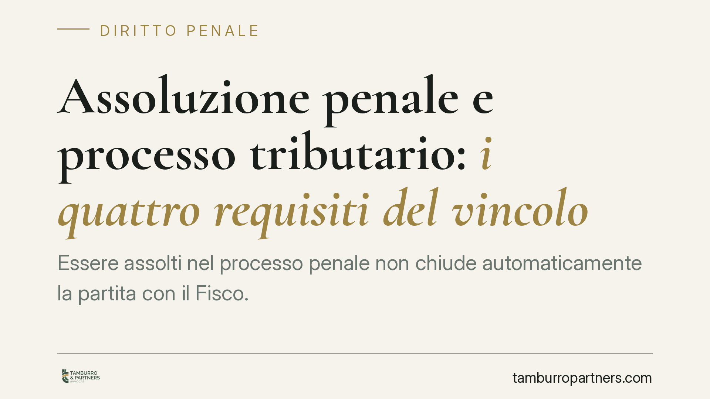

Assoluzione penale e processo tributario: i quattro requisiti del vincolo
Essere assolti nel processo penale non chiude automaticamente la partita con il Fisco. La Corte di giustizia tributaria di secondo grado del Lazio (sentenza 4590/2026) precisa che la sentenza penale di assoluzione vincola il giudice tributario solo in presenza di quattro condizioni precise. In loro assenza resta un semplice elemento di valutazione, non una prova decisiva.

Il caso
Un contribuente, assolto in sede penale per reati tributari, invocava quell'esito per ottenere l'annullamento dell'atto impositivo dell'Agenzia delle Entrate. La tesi: se il giudice penale ha escluso il fatto, il giudice tributario non può affermare il contrario.
La Corte di giustizia tributaria di secondo grado del Lazio ha respinto l'automatismo, ricostruendo con precisione i limiti del nuovo art. 21-bis.
Inquadramento normativo
L'art. 21-bis del d.lgs. 74/2000, introdotto dalla riforma del 2024, ha modificato un principio consolidato. Per decenni il processo penale e quello tributario sono stati considerati autonomi: ciascuno con le proprie regole probatorie, ciascuno libero di valutare gli stessi fatti in modo diverso (il cosiddetto "doppio binario").
La norma introduce ora un'eccezione. La sentenza penale irrevocabile di assoluzione "perché il fatto non sussiste" o "perché l'imputato non lo ha commesso", pronunciata a seguito di dibattimento, ha efficacia di giudicato nel processo tributario. Ma a condizioni rigorose.
La CGT Lazio ne enuclea quattro, tutte necessarie:
- la sentenza deve essere irrevocabile (non più impugnabile);
- deve essere stata pronunciata a seguito di dibattimento, non con riti alternativi o formule diverse;
- deve riguardare lo stesso soggetto parte del giudizio tributario;
- deve vertere sugli stessi fatti materiali oggetto dell'accertamento.
Il punto decisivo: basta che manchi anche un solo requisito perché il vincolo non operi. In quel caso l'assoluzione torna a essere ciò che era prima della riforma, cioè un semplice elemento di prova liberamente valutabile dal giudice tributario, insieme a tutto il resto del materiale istruttorio.
Perché i requisiti non sono formalismi
Le quattro condizioni riflettono differenze strutturali tra i due processi.
Il requisito del dibattimento esclude le assoluzioni maturate con riti che non comportano una piena valutazione delle prove. Una formula come "il fatto non costituisce reato" o un proscioglimento per prescrizione, ad esempio, non attestano l'insussistenza materiale del fatto: dicono solo che quel fatto non è penalmente punibile. Nel tributario, dove si discute di imposta dovuta e non di sanzione penale, quella distinzione pesa.
L'identità di soggetto e fatti evita che un'assoluzione pronunciata in un contesto diverso venga trasposta meccanicamente. Il perimetro dell'accertamento fiscale può non coincidere con l'imputazione penale: periodi d'imposta, operazioni e soggetti possono divergere.
Implicazioni pratiche per il contribuente
Chi affronta parallelamente un procedimento penale e una controversia tributaria non deve dare per scontato che la vittoria in un ambito si estenda all'altro.
L'assoluzione penale resta un'arma difensiva, ma la sua forza dipende dalla formula e dal rito. Un'assoluzione piena "perché il fatto non sussiste", irrevocabile e all'esito del dibattimento, può chiudere la questione fiscale sugli stessi fatti. Una pronuncia meno netta vale come indizio, non come scudo.
Sul versante opposto, l'Agenzia delle Entrate conserva margini di manovra: può sostenere la pretesa impositiva anche dopo un'assoluzione, se dimostra che uno dei quattro requisiti manca o che il quadro probatorio fiscale è autonomo.
Cosa fare in concreto
- Verificate la formula assolutoria. Leggete il dispositivo: solo "il fatto non sussiste" o "l'imputato non lo ha commesso" attivano il vincolo. Formule diverse hanno effetti ridotti.
- Controllate l'irrevocabilità. Accertatevi che la sentenza penale sia passata in giudicato prima di invocarla nel processo tributario; produrre il certificato di irrevocabilità.
- Confrontate soggetti e fatti. Mappate periodi d'imposta, operazioni e persone coinvolte nei due procedimenti per valutare la reale coincidenza.
- Coordinate le difese. Quando penale e tributario corrono in parallelo, impostate una strategia unitaria fin dall'inizio, anziché gestire i fronti separatamente.
- Non attendete passivamente. Se l'assoluzione non soddisfa i quattro requisiti, costruite comunque la difesa tributaria sulle prove documentali e contabili disponibili.
La pronuncia conferma che la riforma del 2024 ha attenuato, ma non abolito, l'autonomia dei due processi. L'assoluzione penale conta, a volte in modo decisivo: ma "sempre" non è la risposta corretta.
Disclaimer
Contributo informativo a cura di Tamburro & Partners - Avv. Giuseppe Tamburro. Non costituisce parere legale.
Ogni condominio ha una storia a sé.
Se gestisci un'amministrazione e vuoi un confronto su una specifica questione condominiale, scrivi allo studio. Ti rispondiamo entro un giorno lavorativo.